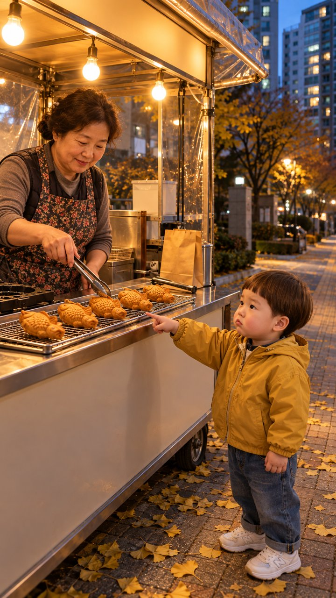

붕어빵 편 — 제작 전 검토
2026-10-23 · doyoon-bungeoppang-line-001 · 원작 Bluey S3 «Pass The Parcel»(IMDb 9.1) 차례 규칙 장치 · 지금까지 비용 0원
확인 부탁드릴 것 2가지
① 붕어빵 노점 빈 세트
가을 저녁 아파트 단지 앞 인도 · 무쇠 틀 · 진열대 붕어빵 한 줄 · 집게·종이봉투. 모든 컷의 장소 기준입니다.
② 붕어빵 줄 시험 그림

도윤이 정본 얼굴 + 겨자색 바람막이. 진열대 붕어빵 다섯 개 한 줄, 이모 집게. (운동화 로고는 키프레임에서 «무늬 없는 흰 운동화»로 고칩니다)
대본 6컷 · 26초
| # | 길이 | 화자 | 대사 | 장면 |
|---|---|---|---|---|
| 1 | 4초 | 도윤 | «도유니 차례차례 해!» | 붕어빵 노점 앞 인도. 엄마 손을 잡고 줄 맨 뒤에 선 도윤이가 가슴을 펴고 뿌듯하게 외친다. |
| 2 | 4초 | 붕어빵 이모 | «자, 따끈한 거 줄게~» | 노점 안 이모가 진열대 가운데 붕어빵을 집게로 집어 들며 다정하게 말한다. 앞쪽에 도윤이 뒷모습이 보인다. |
| 3 | 4초 | 도윤 | «이모! 붕어빵도 차례차례!» | 도윤이가 진열대 맨 앞 붕어빵을 손가락으로 가리키며 진지한 얼굴로 이모에게 말한다. |
| 4 | 4초 | 엄마 | «어머 죄송해요, 줄 서기를 배워서…» | 도윤이 뒤의 엄마가 노점 안 이모에게 살짝 민망한 미소로 고개를 숙인다. 도윤이는 엄마 앞에서 진열대를 본다. |
| 5 | 4초 | 붕어빵 이모 | «그래, 맨 앞 붕어빵부터 줄게» | 이모가 웃음을 참으며 맨 앞 붕어빵을 집게로 집어 든다. 앞쪽에 도윤이 뒷머리가 보인다. |
| 6 | 6초 | 도윤 | «다음 붕어빵, 기다려~!» | 낮고 넓은 화면에 도윤이와 노점 안 이모. 도윤이가 갈색 종이봉투를 두 손으로 안고 진열대에 남은 붕어빵에게 다정하게 말한다. |
도윤이 6컷 모두 화면에 나옵니다(2·4·5컷은 뒷모습·뒤쪽). 도윤이는 노점 주인을 «이모»라 부르고, 아기 발음은 혀짧은 소리 사전대로(«도유니»). 어른 연기는 일상 목소리 · 과장 없음. 6컷은 예약하신 흐름 그대로라 예외(owner_cuts 6)로 적었습니다.